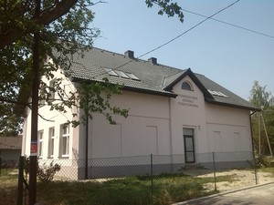

Powszechna Szkoła Podstawowa
w Rudniku
ul. Szkolna 1
43-419 Hażlach
Telefon: 033 8569846
Telefon komórkowy: 798 914 823
E - mail: beatastarzyk@wp.pl
Darmowy Program PIT dostarcza Instytut Wsparcia Organizacji Pozarządowych w ramach projektu PITax.pl dla OPP.
Odwiedź nas na Facebooku!
Kliknij tutaj, jeżeli nie widzisz menu po lewej